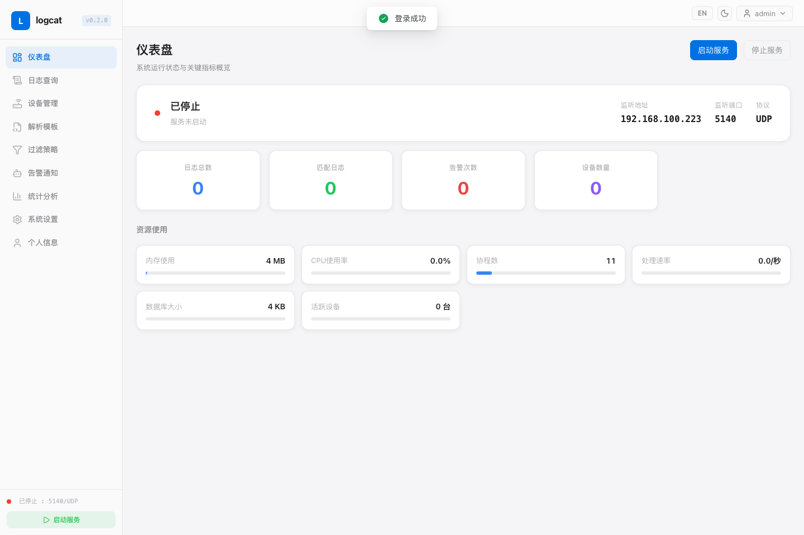
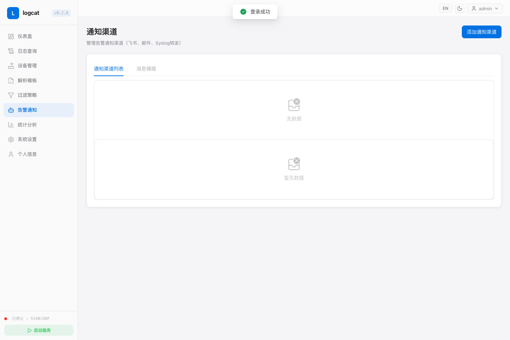
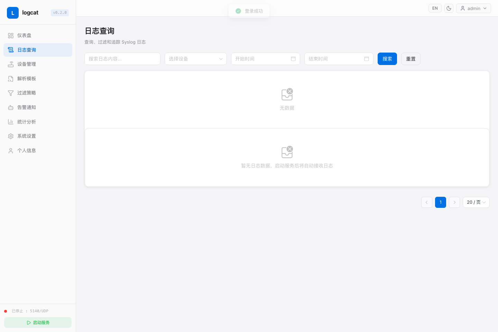

L
logcat
A lightweight self-hosted Syslog alert pipeline for receiving, parsing, filtering, forwarding and notifying security device logs.
Syslog Receiver
Receive Syslog messages over UDP/TCP and keep them searchable in SQLite.
Flexible Parsing
Parse JSON, Syslog+JSON, delimiter, key-value and regex based logs.
Alert Channels
Send notifications to Feishu, Email, or forward alerts to another Syslog server.
Easy Deployment
Run with a single Linux binary, Docker, Docker Compose or systemd installer.
Quick Start
curl -O https://raw.githubusercontent.com/jincaiw/logcat/v0.2.0/docker-compose.yml
docker compose up -dOpen http://localhost:8080. Default account: admin / admin123. Change the password after first login.
Demo Screenshots


